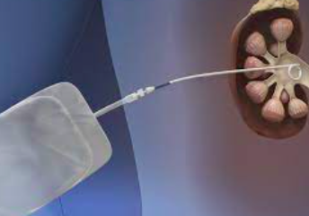

NEFROSTOMIA
Nefrostomias
La obstruccion del condulto de salida del sistema colector renal puede general perdida completa de la funcion renal y el devenir en dialisis. Estas obstrucciones se generan por piedras o tumores o lesiones quirurgicas. Cuando el urologo no logra emplazar un cateter doble j la alternativa percutanea miniinvasiva es lo conveniente
Se requiere del ingreso a quirofano, de la aplicacion de una leve sedacion mas anestesico local. Como equipos de imgenes se usa el ultrasonido y el intensificador de rayos.
Es un procedimiento con baja tasa de complicaciones no obstsante no debe realizarse de forma ambulatoria ya que el riesgo de sagrado post puncion existe y no es despresiable.